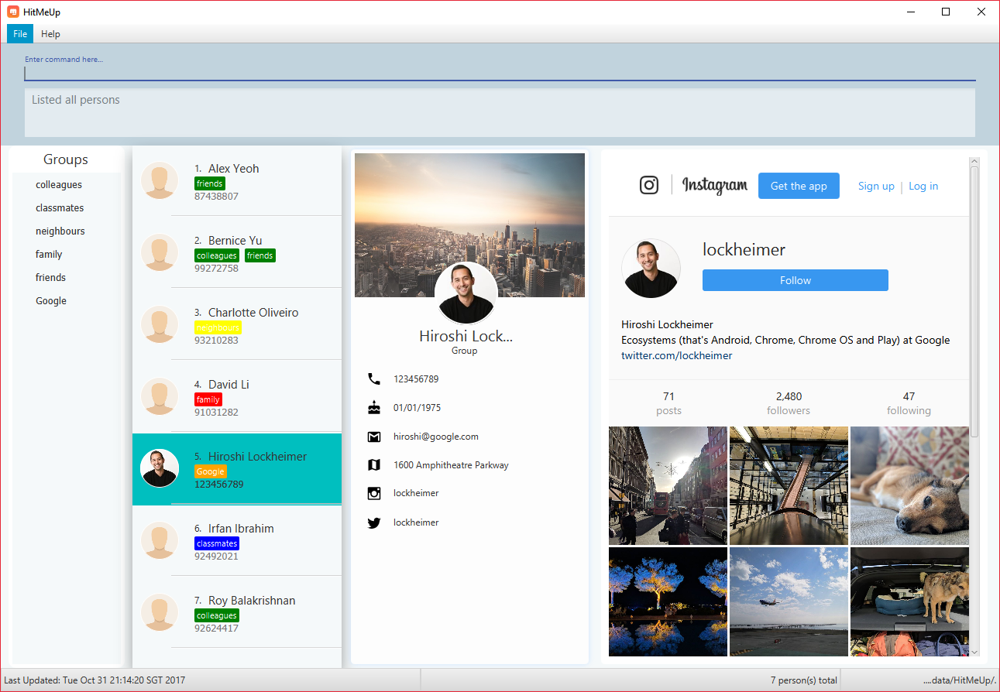
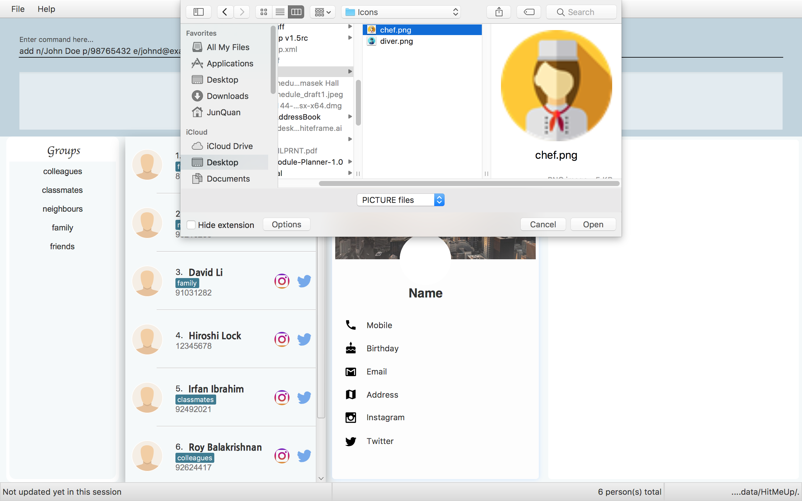
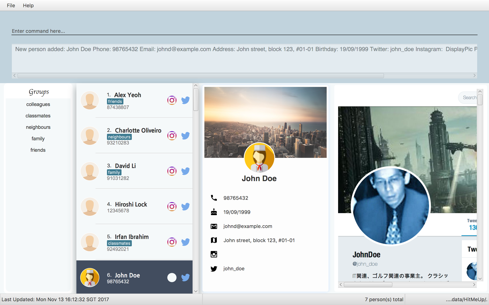
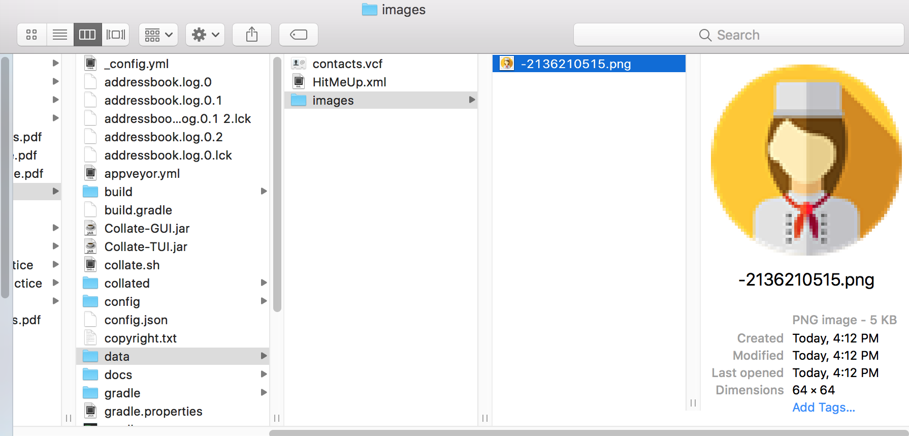
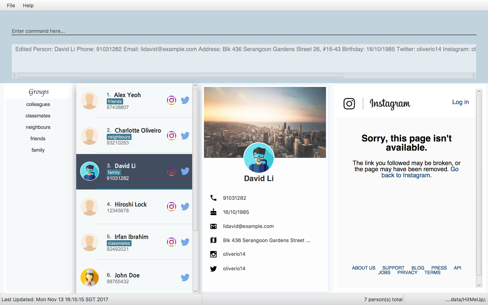
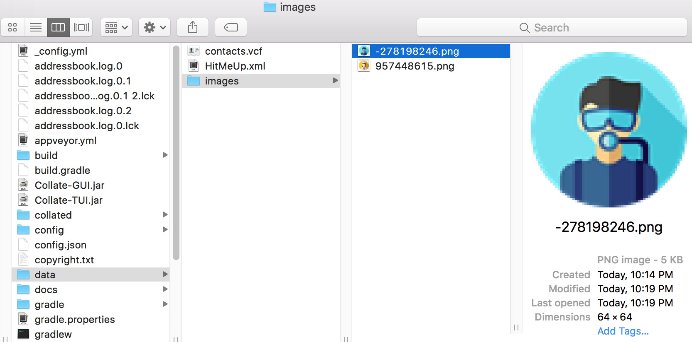
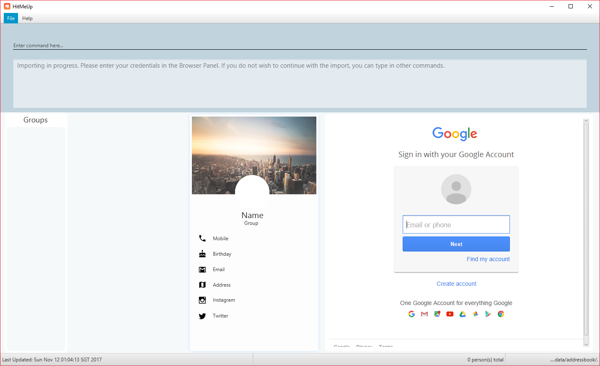
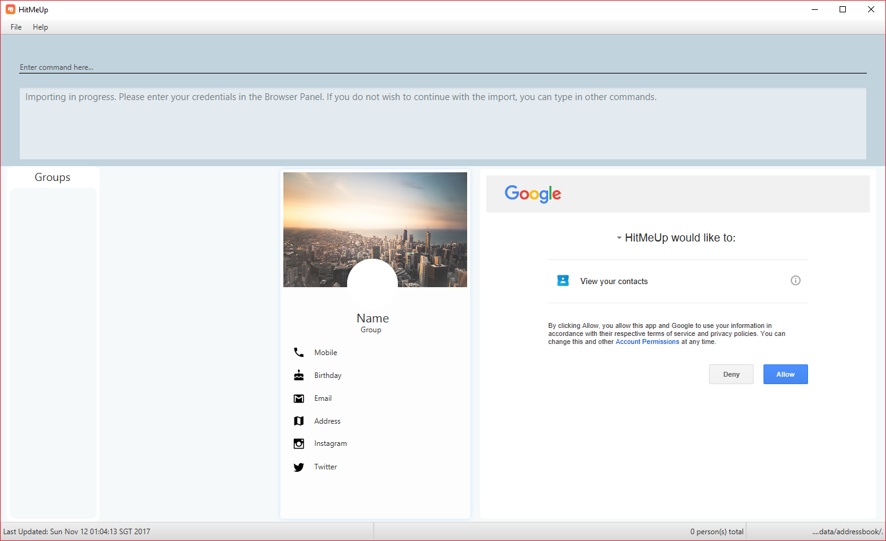
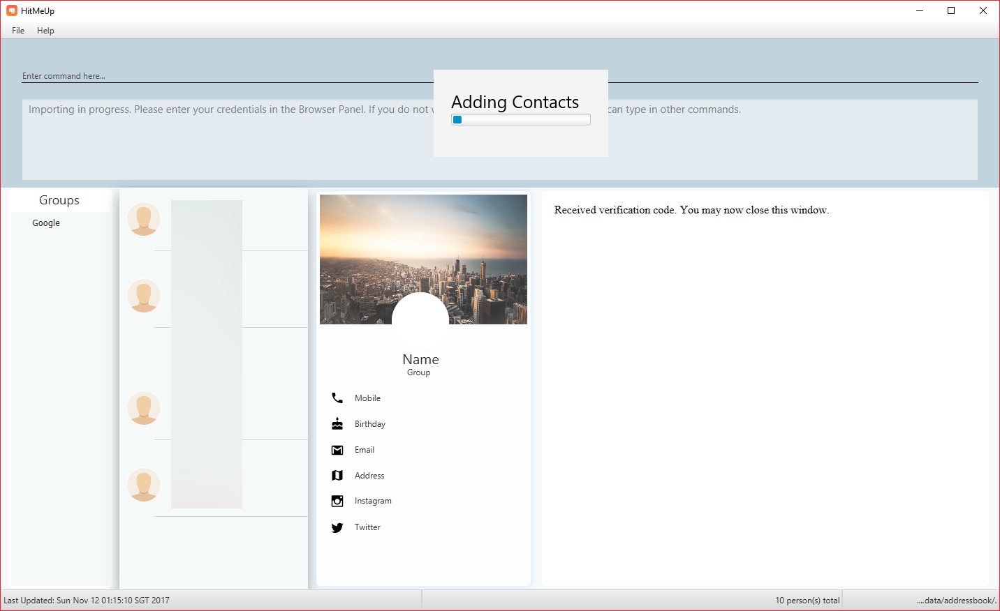
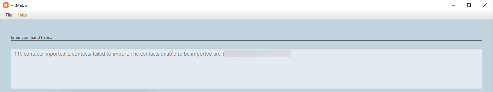

By: Daniel, Jun Quan, Conant, Bing Hwang Since: Jun 2016 Licence: MIT
- 1. Introduction
- 2. About
- 3. Quick Start
- 4. Enhancement
- 5. Features
- 5.1. Viewing help :
help - 5.2. Adding a person:
add - 5.3. Listing all persons :
list - 5.4. Editing a person :
edit - 5.5. Deleting a person :
delete - 5.6. Selecting a person :
select - 5.7. Listing entered commands :
history - 5.8. Undoing previous command :
undo - 5.9. Redoing the previously undone command :
redo - 5.10. Adding an alias for a command :
alias - 5.11. Importing contacts :
import - 5.12. Exporting contacts :
export - 5.13. Email contacts:
email - 5.14. Deleting a tag :
tagdelete - 5.15. Editing a tag :
tagedit - 5.16. Find persons (improved) :
find - 5.17. Viewing a contact’s Twitter/Instagram profile :
social - 5.18. Viewing a contact’s address :
location - 5.19. Exiting the program :
exit - 5.20. Saving the data
- 5.1. Viewing help :
- 6. FAQ
- 7. Command Summary
1. Introduction
HitMeUp is an address book application designed with the sociable user in mind. It aims to provide a one stop solution for every need: To contact, keep up and organise. With the cloud import feature, a user would be able to get the application up and running a matter of minutes. Being able to group your contacts, and view each group at a glance affords convenience like never before. Social integration to Instagram and Twitter is baked in, allowing users to view profiles in the application itself without having to switch to a browser or check their phone.
2. About
This User Guide provides detailed description of each feature that are available in HitMeUp. Each feature has its own examples so that you can easily follow through. As this is a Command Line Interface (CLI) application, being able to type should help you use HitMeUp without much difficulty. Lastly, there will be a command summary which will provide you a quick overview of how each feature can be used.
3. Quick Start
The following instructions will help you get started with HitMeUp quickly:
-
Ensure you have Java version
1.8.0_60or later installed in your Computer.Having any Java 8 version is not enough.
This app will not work with earlier versions of Java 8. -
Download the latest
HitMeUp.jarhere. -
Copy the file to the folder you want to use as the home folder for HitMeUp.
-
Double-click the file to start the app. The user interface shown below should appear in a few seconds.
Figure 3. HitMeUp User Interface
-
Type a command (we recommend trying the
importcommand first) into the command box and press Enter to execute it.
e.g. typinghelpand pressing Enter will open the help window. -
Try some of these example commands to get started:
-
list: lists all contacts -
addn/John Doe p/98765432 e/johnd@example.com a/John street, block 123, #01-01 b/19/09/1999: adds a contact namedJohn Doeto the list of contacts -
delete3: deletes the 3rd contact shown in the current list of contacts -
exit: exits the app
-
4. Enhancement
This section shows features that have been implemented in HitMeUp so far.
-
Add a contact using only their name and number, or with any of the following supported fields: Email, Address, Birthday, Twitter, Instagram, Display Picture, Tag
-
Import your existing contacts from Google Contacts
-
Export individual contacts to easily share with others
-
Search by a contact’s name, starting alphabet, birthday month or groups
-
Email contacts quickly without having to copy their email addresses
-
View your groups at a glance with the groups tab
-
Keep up with your contacts through the social command
-
View your contacts' addresses quickly in Google Maps
5. Features
This section covers all the existing features that are implemented in HitMeUp. The command format is as follows:
Command Format
-
Words in
UPPER_CASEare the parameters to be supplied by the user e.g. inadd n/NAME,NAMEis a parameter which can be used asadd n/John Doe. -
Items in square brackets are optional e.g
n/NAME [t/TAG]can be used asn/John Doe t/friendor asn/John Doe. -
Items with
… after them can be used multiple times including zero times e.g.[t/TAG]…can be used ast/friend,t/friend t/familyetc. -
Parameters can be in any order e.g. if the command specifies
n/NAME p/PHONE_NUMBER,p/PHONE_NUMBER n/NAMEis also acceptable.
5.2. Adding a person: add
Adds a person to the application.
Format: add n/NAME p/PHONE_NUMBER [e/EMAIL] [a/ADDRESS] [b/BIRTHDAY] [tw/TWITTER] [ig/INSTAGRAM] [dp/] [t/TAG]…
| A person can have any number of tags (including 0). |
| If you do not have a display picture to add, leave out the dp/ prefix. |
Example:
-
add n/John Doe p/98765432 e/johnd@example.com a/John street, block 123, #01-01 b/19/09/1999 tw/john_doe dp/-
Pops up the file chooser for user to choose the image they want to set as display picture.
 -
Adds a person called John Doe with a phone number of 98765432, an email address of johnd@example.com, an address of John street, block 123, #01-01 and a Twitter username of john_doe. John Doe is also added with the image chosen as his display picture.
 -
The image is copied into the designated display picture storage directory with a unique name.

-
5.4. Editing a person : edit
Edits an existing person in the application.
Format: edit INDEX [n/NAME] [p/PHONE] [e/EMAIL] [a/ADDRESS] [b/BIRTHDAY] [tw/TWITTER]
[ig/INSTAGRAM] [dp/] [t/TAG]…
Examples:
-
edit 1 p/91234567 e/johndoe@example.com
Edits the phone number and email address of the 1st person to be91234567andjohndoe@example.comrespectively. -
edit 2 n/Betsy Crower t/
Edits the name of the 2nd person to beBetsy Crowerand clears all existing tags. -
edit 3 dp/
-
Pops up the file chooser for user toc hoose the image they want to set as display picture.

-
Display picture of the 3rd person is changed to the chosen image.
 -
The image is copied into the designated display picture storage directory with a unique name.

5.5. Deleting a person : delete
Deletes the specified person from the address book.
Format: delete INDEX
Examples:
-
list
delete 2
Deletes the 2nd person from the list of contacts listed. -
find Betsy
delete 1
Deletes the 1st person in the results of thefindcommand.
5.6. Selecting a person : select
Selects the person identified by the index number used in the last person listing.
Format: select INDEX
Examples:
-
list
select 2
Selects the 2nd person from the list of contacts listed. -
find Betsy
select 1
Selects the 1st person in the results of thefindcommand.
5.7. Listing entered commands : history
Lists all the commands that you have entered in reverse chronological order.
Format: history
|
Pressing the ↑ and ↓ keys will display the previous and next input respectively in the command box. |
5.8. Undoing previous command : undo
Restores the address book to the state before the previous undoable command was executed.
Format: undo
|
Undoable commands: commands that modify the application’s content ( |
Examples:
-
delete 1
list
undo(reverses thedelete 1command) -
select 1
list
undo
Theundocommand fails as there are no undoable commands executed previously. -
delete 1
clear
undo(reverses theclearcommand)
undo(reverses thedelete 1command)
5.9. Redoing the previously undone command : redo
Reverses the most recent undo command.
Format: redo
Examples:
-
delete 1
undo(reverses thedelete 1command)
redo(reapplies thedelete 1command) -
delete 1
redo
Theredocommand fails as there are noundocommands executed previously. -
delete 1
clear
undo(reverses theclearcommand)
undo(reverses thedelete 1command)
redo(reapplies thedelete 1command)
redo(reapplies theclearcommand)
5.10. Adding an alias for a command : alias
Allows you to add an alias for any command used in the application.
Format: alias USER_ALIAS COMMAND
Examples:
-
alias add help
This command fails asaddis the name of a valid command. -
alias a add
Assigns the alias 'a' to the add command. 'a' can now be used in place of add. -
alias d delete
alias d exit
'd' can now be used in place of exit. Initially, alias 'd' was assigned to delete, but since the alias was subsequently assigned to exit, it is no longer assigned to delete.
5.11. Importing contacts : import
Allows you to import contacts from either Google Contacts.
Format: import SERVICE_NAME
-
import google-
Opens the Google authentication page (as shown below) in HitMeUp to grant the app access to your contacts.
Figure 5.11a. Google Authentication Page
-
Once you have logged in with your credentials, the consent page below will be loaded:
Figure 5.11b. Google Consent Page
-
After granting access, HitMeUp will display a progress bar (as shown below) to indicate the progress of import.
Figure 5.11c. HitMeUp Import Progress
-
After import has completed, the application will show the number of contacts successfully imported and the names of contacts that were unable to be imported.
Figure 5.11d. Import Result Display
-
5.12. Exporting contacts : export
Allows you to export contacts from HitMeUp into a vCard file.
Format: export all or export INDEX [INDEX]…

Figure 5.12. Data folder directory containing vCard file
Examples:
-
export all
Exports all contacts into a vCard file. -
list
export 1 2
Exports the 1st and 2nd persons from the list of contacts into a vCard file.
5.13. Email contacts: email
Emails one or more persons identified by the index number used in the last person listing.
Format: email INDEX [INDEX]…
Figure 5.13. Default mail application in Windows 10
| You can set your own default mail application. Please refer to instructions in the FAQ. |
Examples:
-
list
email 2 3
Opens the default mail application to send an email to the 2nd and 3rd persons from the list of contacts. -
find Betsy
email 1
Opens the default mail application to send an email to the 1st person in the results of thefindcommand.
5.14. Deleting a tag : tagdelete
Allows you to delete a tag from all persons in the address book.
Format: tagdelete TAG_NAME
Examples:
-
tagdelete friends
Deletes the tag 'friends' from all persons with the 'friends' tag in the address book.
5.15. Editing a tag : tagedit
Allows you to change the name of a tag belonging to all persons in the address book.
Format: tagedit OLD_TAG_NAME NEW_TAG_NAME
Examples:
-
tagedit friends losers
Changes the tag 'friends' into 'losers' for all persons with that tag.
5.16. Find persons (improved) : find
Searches for persons whose name, tags, birthday or initials contain any of the given keywords.
Format: find KEYWORD [MORE_KEYWORDS]
Examples with explanation:
-
findonly supports searching for 1 name.
e.g.:find Alex
find Alexwill successfully find any persons with the nameAlex, but findAlex Bobwill not find all persons with the nameAlexandBob. It would instead find persons with bothAlexandBobin their names. -
findsupports searching for multiple tags.
e.g.:find colleagues friends
find colleagueswill successfully find any persons with the tagcolleaguesin their description.find colleagues friendswill find any persons with BOTH the tagscolleaguesandfriends. -
findalso supports searching for a name with tags.
e.g.:find Alex colleaguesfind Alex colleaguesreturns all persons with the wordAlexin their names (either first name or last name) and arecolleagues. -
findsupports searching for a birthday month.
e.g.:find 12
find 12will return all persons whose birthdays are in the month of December. -
findsupports searching for an initial.
e.g.:find a
find awill return all persons whose last names or first names begin with the lettera. -
The order of keywords does not matter.
e.g.:find Alex colleaguesis the same asfind colleagues Alex. -
findis case insensitive for all inputs.
e.g.:find BeRnICe FrIEnDsis the same asfind Bernice friends.
5.17. Viewing a contact’s Twitter/Instagram profile : social
Opens a person’s Twitter or Instagram profile in the browser panel.
Format: social INDEX SOCIAL_MEDIA
Examples:
-
social 1 ig
Opens up the Instagram profile of the person at index 1. -
social 2 tw
Opens up the Twitter profile of the person at index 2.
5.18. Viewing a contact’s address : location
View a person’s address in the browser panel using Google Maps.
Format: location INDEX
Examples:
-
location 1
Opens up the Google Maps location of the person at index 1. === Clearing all entries :clear
Clears all entries from the address book.
Format: clear
5.20. Saving the data
Application data is automatically saved to the hard disk after any command that changes the data.
There is no need to save manually.
6. FAQ
Q: How do I transfer my data to another Computer?
A: Install the app in the other computer and overwrite the empty data file it creates with the file that contains the data of your previous Address Book folder.
Q: How do I set my default mail application to use the email feature?
A: For Windows users, go to Settings > Apps & features > Default apps. For MAC users, click here for instructions.
For other OS users, please refer to the guides online on how to set your default mail application.
7. Command Summary
-
Add
add n/NAME p/PHONE_NUMBER [e/EMAIL] [a/ADDRESS] [b/BIRTHDAY] [tw/TWITTER] [ig/INSTAGRAM] [dp/DISPLAY_PIC_CHOICE] [t/TAG]…
e.g.add n/James Ho p/22224444 e/jamesho@example.com a/123, Clementi Rd, 1234665 b/03/04/1990 ig/jamesho t/friend t/colleague -
Alias :
alias ALIAS COMMAND
e.g.alias a add -
Clear :
clear -
Delete :
delete INDEX
e.g.delete 3 -
Edit :
edit INDEX [n/NAME] [p/PHONE] [e/EMAIL] [a/ADDRESS] [b/BIRTHDAY] [tw/TWITTER] [ig/INSTAGRAM] [dp/DISPLAY_PIC_CHOICE] [t/TAG]…
e.g.edit 2 n/James Lee e/jameslee@example.com -
Email :
email INDEX [INDEX]…
e.g.email 1 2 -
Export :
export INDEX [INDEX]…
e.g.export 1 2 -
Exit :
exit -
Find :
find KEYWORD [MORE_KEYWORDS]
e.g.find James Jake -
Help :
help -
History :
history -
Import :
import
e.g.import Google -
List :
list -
Location :
location INDEX
e.g.location 1 -
Redo :
redo -
Select :
select INDEX
e.g.select 2 -
Social :
social INDEX SOCIAL_MEDIA
e.g.social 1 ig -
Tag Delete:
tagdelete TAG_NAME
e.g.tagdelete friends -
Tag Edit:
tagedit OLD_TAG_NAME NEW_TAG_NAME
e.g.tagedit friends losers -
Undo :
undo